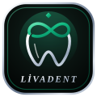
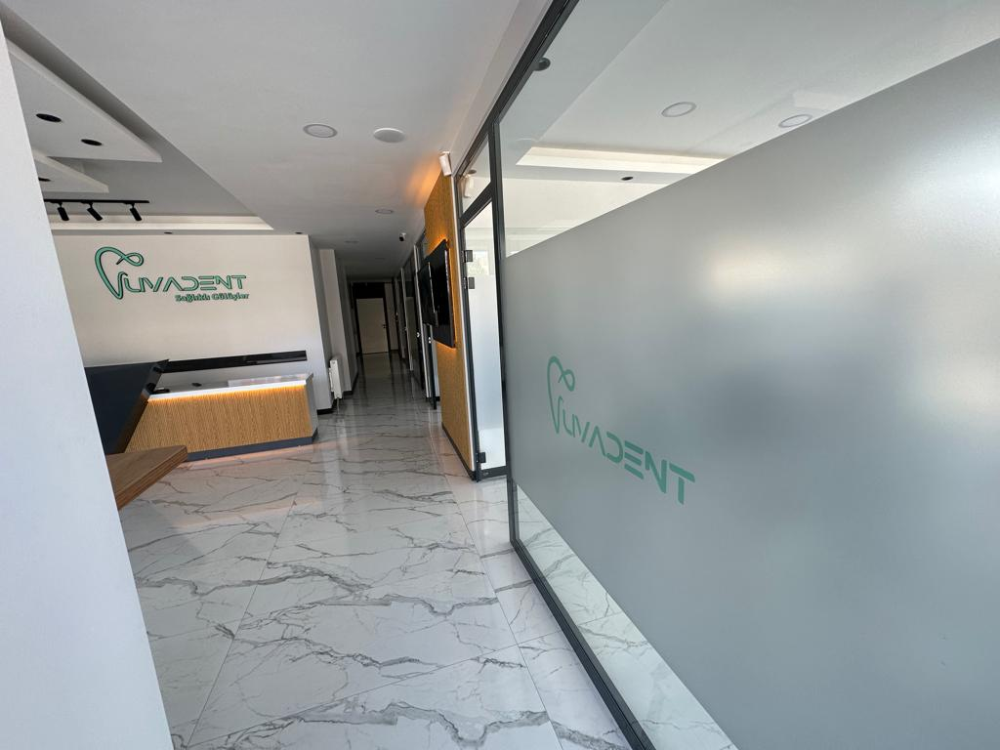
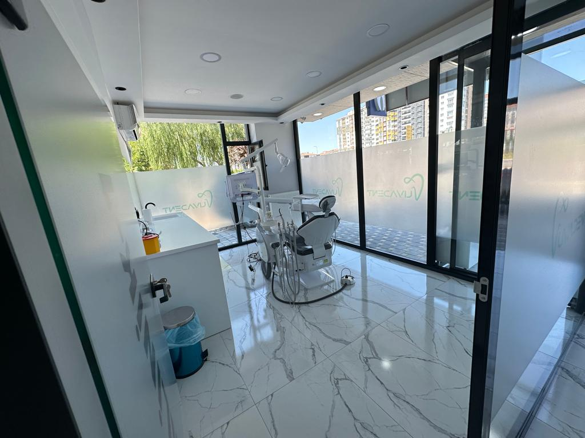
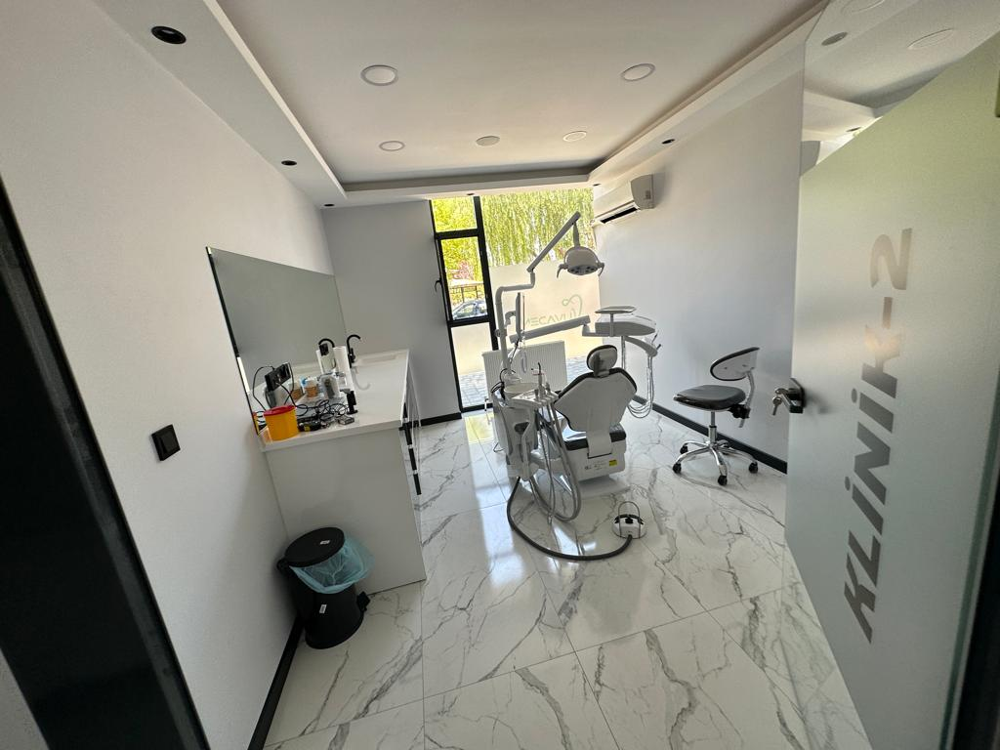
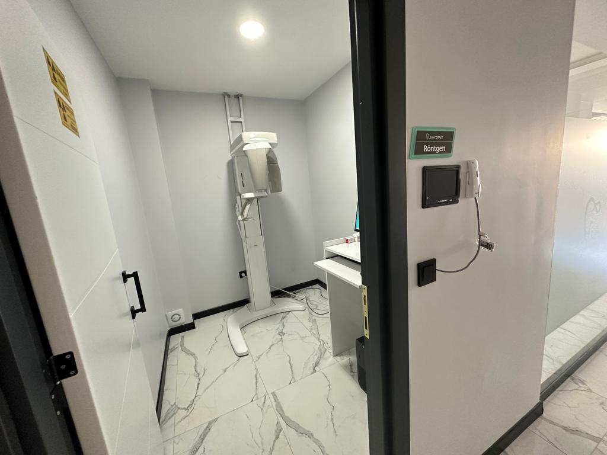
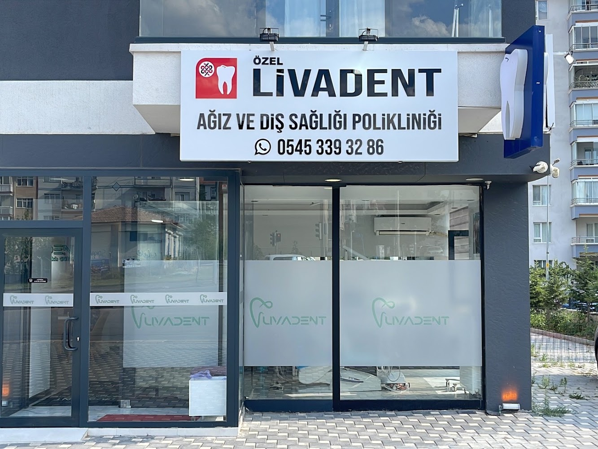

Kayıt ve Anamnez
Genel sağlık durumu, kronik rahatsızlıklar ve düzenli kullanılan ilaçlar hekim değerlendirmesi öncesi kayıt altına alınır.

Şube Seçerek Hemen Başlayın
Her iki polikliniğimizde tanı, bilgilendirme ve uygulama adımları standart klinik protokollere uygun biçimde ilerler.
Genel sağlık durumu, kronik rahatsızlıklar ve düzenli kullanılan ilaçlar hekim değerlendirmesi öncesi kayıt altına alınır.
Klinik ağız içi muayeneye ek olarak gerektiğinde periapikal veya panoramik görüntüleme ile tanısal analiz yapılır.
Uygulanacak işlemler, alternatif yaklaşımlar ve bakım süreçleri hastaya aktarılarak aydınlatılmış onam alınır.
Dezenfeksiyon ve otoklav sterilizasyonu sağlanmış ünitlerde işlemler tamamlanır; periyodik kontrol süreci planlanır.





Özel Livadent markası altında Sincan ve Kahramankazan ilçelerinde faaliyet gösteren polikliniklerimiz; Kulen Ağız ve Diş Sağlığı Hizmetleri Ticaret Limited Şirketi bünyesinde, Ankara İl Sağlık Müdürlüğü ruhsatı ile hizmet sunmaktadır.
Her iki şubemizde de tek kullanımlık sarf malzemeleri, hasta değişimlerinde yüzey dezenfeksiyonu ve otoklav sterilizasyonu standart olarak uygulanmaktadır. Sitemizdeki tüm tıbbi bilgilendirmeler Mesul Müdürümüz ve İnternet Sitesi Editörümüz Dt. Tuğçe Nur Kulen Çakmak kontrolünde hazırlanmaktadır.
Ankara’nın iki ilçesinde açık adreslerimiz, çalışma saatlerimiz ve doğrudan şube iletişim hatlarımızla hizmetinizdeyiz.
* 1219 sayılı Kanun ve güncel Tanıtım Yönetmeliği gereği yalnızca Sağlık Bakanlığı tescilli resmi hekim unvanı (“Diş Hekimi / Dt.”) kullanılmaktadır. Diğer hekimlerimizin isim ve fakülte bilgileri güncellendikçe kadro kartlarına işlenecektir.
Aşağıdaki 12 rehber başlığı hastalarımızı tanı ve tedavi süreçleri hakkında bilimsel sınırlar içinde bilgilendirmek amacıyla hazırlanmıştır.
Ağız ve diş sağlığının korunmasına yönelik temel öneriler ile şube işleyişi hakkında sıkça merak edilen konular.